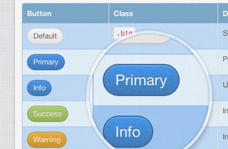
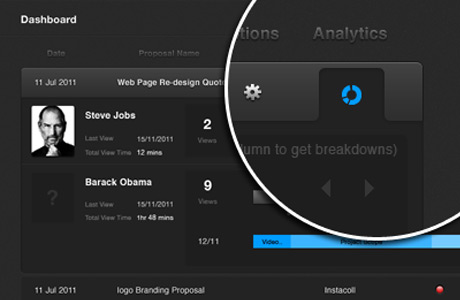

Licensed under [CC BY 3.0] and free to use and download here and on github.
We stand on the shoulders of these giants*:
These awesome peeps in no way endorse us.We'll let you know when we launch a new them and we have some cool things lined up like theme contest.
Follow @bootstrapinator

We love being able to quickly iterate and build concepts using bootstrap. However, we've discovered that more and more sites are starting to look the same, because their creators never find time to customize the CSS.
Bootstrapinator is our attempt to create some quality themes that can easily be added to existing projects while maintaining the great framework of Bootstrap.